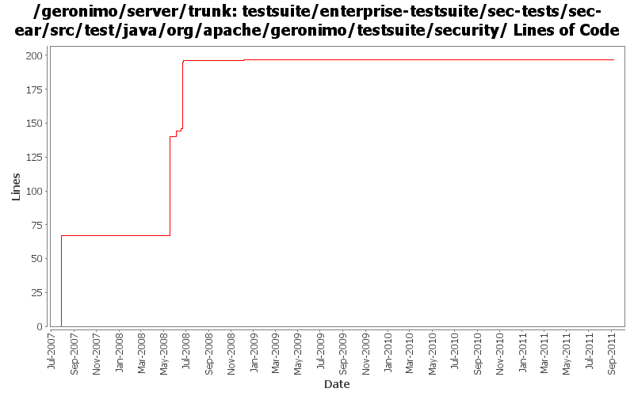

[root]/testsuite/enterprise-testsuite/sec-tests/sec-ear/src/test/java/org/apache/geronimo/testsuite/security

| Author | Changes | Lines of Code | Lines per Change |
|---|---|---|---|
| Totals | 13 (100.0%) | 242 (100.0%) | 18.6 |
| djencks | 10 (76.9%) | 237 (97.9%) | 23.7 |
| xiaming | 1 (7.7%) | 2 (0.8%) | 2.0 |
| jdillon | 1 (7.7%) | 2 (0.8%) | 2.0 |
| xuhaihong | 1 (7.7%) | 1 (0.4%) | 1.0 |
GERONIMO-5459 Open disabled cases and fix failed cases caused by logging issue
2 lines of code changed in 1 file:
GERONIMO-6058 Replace StringBuffer usage with StringBuilder
1 lines of code changed in 1 file:
GERONIMO-4155, GERONIMO-4778 Prevent use of a run-as role that isn't configured to supply a non-null Subject. Make servlet dispatch follow run-as roles
1 lines of code changed in 1 file:
clearer error message
3 lines of code changed in 1 file:
GERONIMO-4124 fix run-as tests by defining 3rd role. Results are more plausible but still a bit odd
7 lines of code changed in 1 file:
GERONIMO-4124 more run-as tests. Not clear results are correct, but they agree on jetty and tomcat
75 lines of code changed in 2 files:
GERONIMO-4119 Test that role-ref work after calling an ejb. Also actually use the injection test servlet
3 lines of code changed in 1 file:
add some role-ref tests to sec-tests
6 lines of code changed in 1 file:
GERONIMO-4034 example of app client to openejb security
75 lines of code changed in 2 files:
Use waitForPageLoad()
2 lines of code changed in 1 file:
GERONIMO-3357 better test name
67 lines of code changed in 1 file: